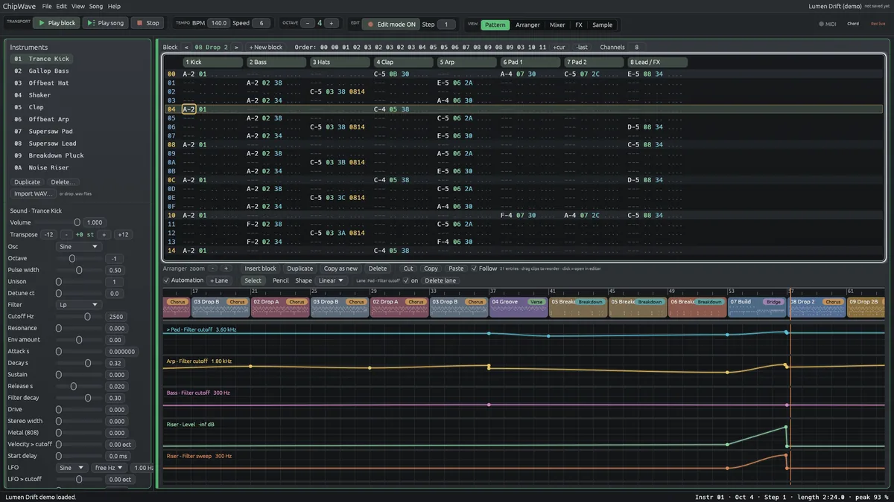
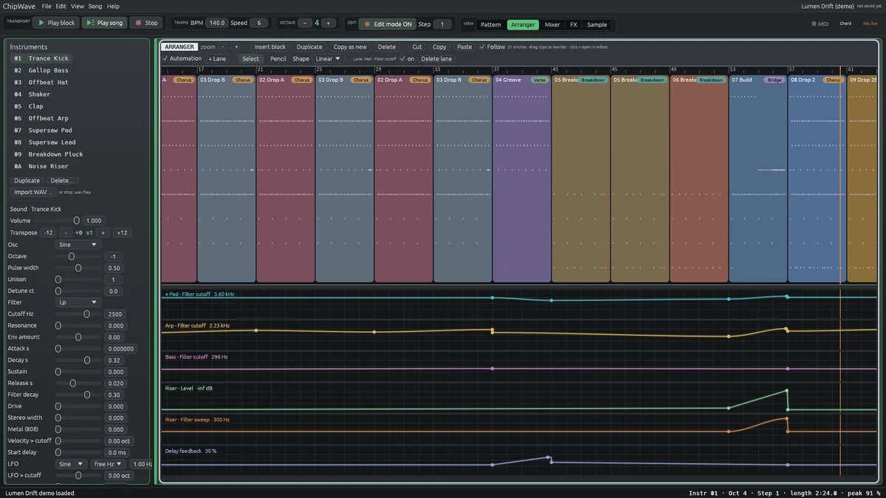
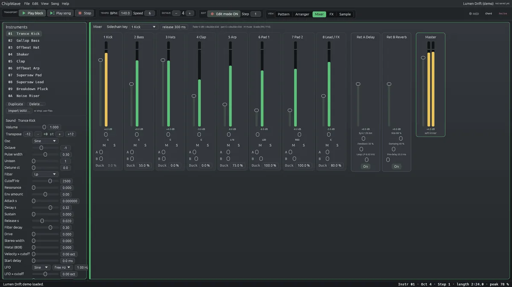
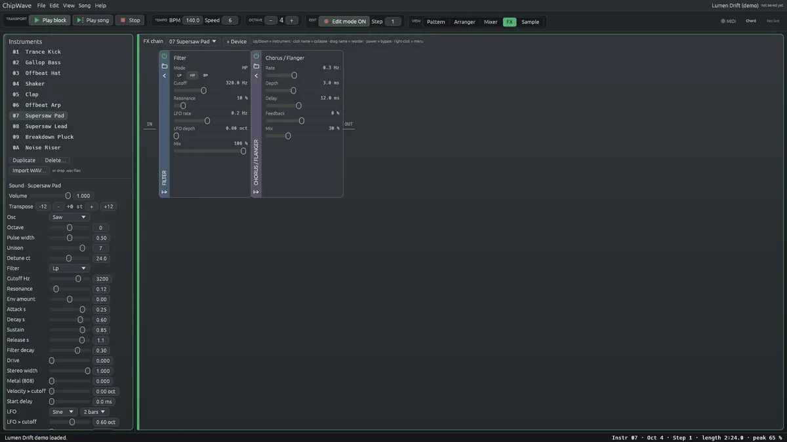
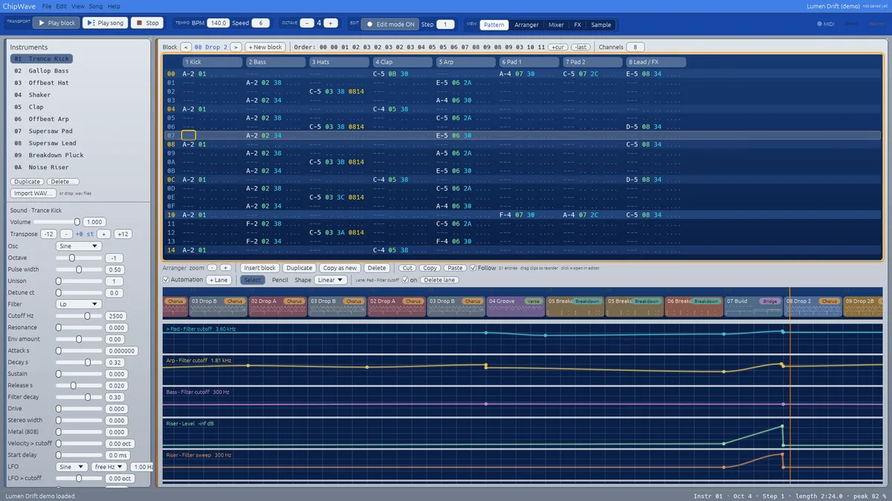
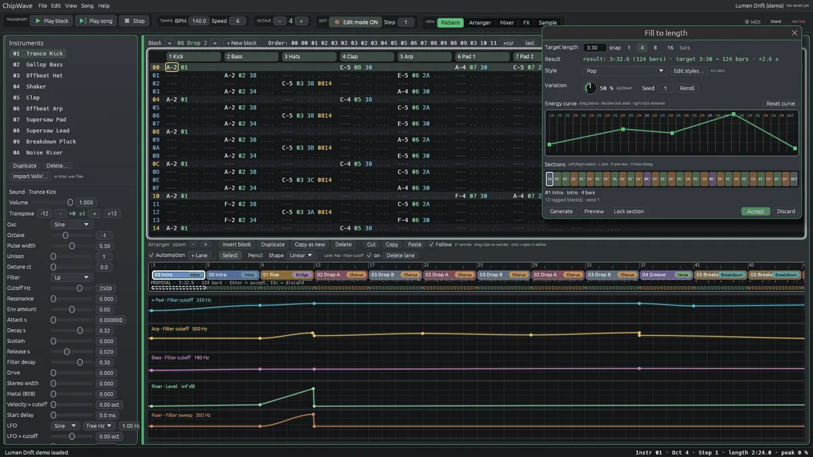

ChipWave Tracker: a free music DAW and OctaMED-inspired tracker
The fast, keyboard-driven pattern workflow of the classic Amiga trackers, with a built-in synth, a visual arranger, a mixer with sidechain ducking, MIDI input and WAV/MP3 export. For Windows and Linux.
Free and open source (GPL-3.0) · written in Rust · early version in active development

A music tracker with a modern DAW inside
Everything here is in the current release. The screenshots are real captures.
🎼 Pattern editor
OctaMED-style blocks of 64 rows with note, instrument, volume and effect columns, the classic Z–M keyboard layout, transpose and undo.
🎹 Built-in synth
Oscillators with unison and detune, a filter with its own envelope, ADSR, drive, an 808-style metallic source and a tempo-syncable LFO.
🧱 Visual arranger
Your song as coloured clips with section badges, drag to reorder, plus automation lanes for filter sweeps, levels and delay.
🎚️ Mixer with sidechain ducking
Faders, pan, mute/solo, meters, delay and reverb sends, and sidechain ducking for that trance pump.
🎛️ FX chain
Filter, chorus/flanger, delay, reverb, drive, bitcrusher and compressor per instrument, with presets.
🎹 MIDI keyboard
Play with velocity, sustain and pitch bend, record step or live into the pattern, and MIDI-learn faders and knobs.
📼 WAV & MP3 export
Export the whole song, a block or an arranger selection, with ID3 tags.
🪄 Fill to length
Auto-arrange a song to a target length from a style, with an editable energy curve.
🖥️ Amiga Workbench theme
Switch from the Dark Circuit theme to a light Amiga Workbench look with blue headers and an orange cursor.
Also included: WAV sample import with loop points, autosave, backups and crash recovery, an original 140 BPM demo song (“Lumen Drift”), UI scaling and an update check.
Screenshots
Real captures of the app, no mock-ups.





Watch the cicada film
A cicada finds its rhythm, with a little nod to the Amiga days.

Or watch it on YouTube · more on the channel
Download ChipWave Tracker free
Latest release: v0.2.3.5 · all files and checksums · GPL-3.0 licence
🪟 Windows
64-bit Windows 10 and later. Installer or portable zip. Opens with the demo song: press Space to play.
Installer (.exe)Portable .zip🐧 Linux
Build it from source with Rust. On Debian/Ubuntu you also need libasound2-dev.
git clone https://github.com/postmanpat-303/ChipWaveTracker cd ChipWaveTracker cargo run --release
The Windows installer isn't code-signed yet, so if SmartScreen warns you, click “More info” then “Run anyway”.
Join the community
ChipWave Tracker is built with its users. Ideas, questions, bug reports and show-and-tell are all welcome.
☕ Support it
It's free and always will be. If you enjoy it, a coffee keeps it going.
Buy me a coffee PayPalFind your rhythm.
ChipWave Tracker is a free music tracker and DAW for Windows and Linux.
Part of the Wave family: BigWave Radio · ChipWave Tracker · StreamWave